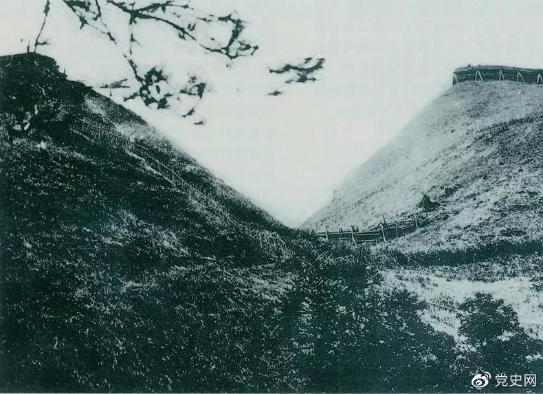
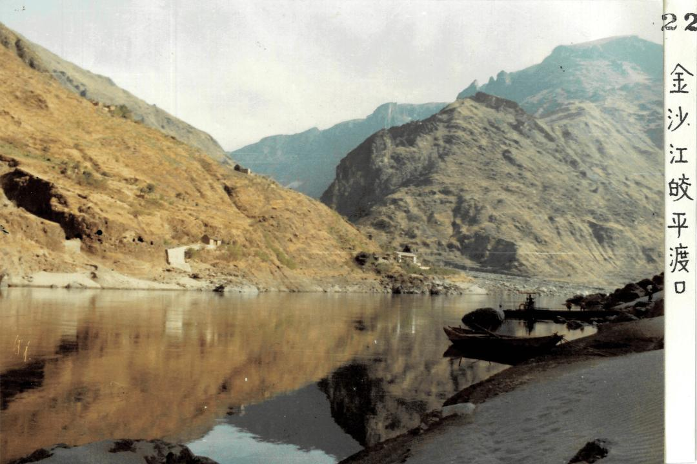
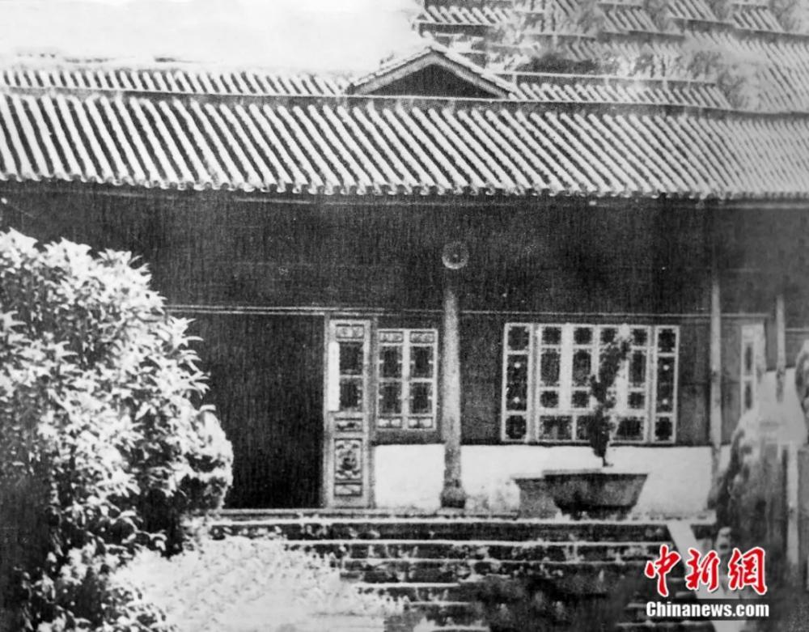

一部歌剧，
一个年代，一种选择。
三个云南革命历史断面：1928 查尼皮的马灯、1935 皎平渡的木船、1946 昆明的红烛。本页供比选——选哪一个，就把哪一个做成舞台上的歌剧。
写在前面
各位老师好。有些想法用文字说更清楚，所以先把我们目前的情况写在这里。
今天拿出来的是三部红色歌剧的初稿。都还没定稿，但是这三个方向我心里基本有定数——如果选定一个方向，明年二月之前可以拿出定稿。今天想跟大家聊聊：我们为什么做这三部剧，现在做到哪一步了，未来可以往哪些方向走。
三部剧的历史事件全部发生在云南——查尼皮在蒙自，皎平渡在禄劝，至公堂在昆明。没有一部是"挂个云南名其实在外地"的。我们就是想把云南自己的红色故事，用云南自己的人、云南自己的音乐，写成舞台上的歌剧。
这三部剧，一部写建党初期云南地下党那批不到三十岁的年轻人怎么点起第一盏灯；一部写彝族青年怎么把私仇放下、把命交给红军，在金沙江七天七夜；一部写闻一多先生怎么从书斋走到至公堂，拍案讲完最后一次话。三个时代，三种气质——有马灯的沉郁，有火塘的炽烈，有红烛的燃烧。
今天把它们放在一起，不是说三部都要做。是想请各位老师从自己专业的角度看看，哪个方向更值得先立住——不管是从题材的戏剧张力、音乐的可行性、还是未来演出和推广的角度。我们这边三部剧的剧本初稿都已经有了，demo 也做了几首，可以先听一听。选定一个方向之后，我们会把它做扎实，做成一部能真正站在舞台上的戏。
再往远一点说，这三部剧不是孤立的三个项目——它是一个系列。如果第一部立住了，后面两部可以跟着做，最终形成"云南红色三部曲"。到那个时候，不只是做三部戏，而是可以围绕它做研究、做课题、做教学、做一个真正扎根云南的本土歌剧创作平台。
这个网站把三部剧客观地摆出来——讲了什么、谁在写、有哪些歌可以先听一听、未来可以往哪些方向申报和做课题。大家慢慢看。
—— 2026 年 11 月 5 日，昆明
主创阵容
当前为核心创作组暂定名单，后续将补充出品单位、艺术总监、指挥、舞美设计、灯光设计、服装设计等岗位。
三部剧，三种气质
一张表，看清楚差别
| 维度 | 《百年星语·破晓1928》 | 《山河摆渡人》 | 《闻一多先生》 |
|---|---|---|---|
| 年代跨度 | 1928 — 1930 — 2024（跨时空） | 1932 — 1935 — 2009（跨时空） | 1946（集中于 7·11—7·15） |
| 地点 | 查尼皮茅屋 → 昆明 → 纪念馆 | 滇北彝寨 → 扎西 → 昆明 → 皎平渡 | 昆明·联大 → 至公堂 → 西仓坡 |
| 核心事件 | 中共云南一大、吴澄李国柱夫妇就义 | 巧渡金沙江、龙云献图、彝寨军民同心 | 李公朴遇刺、最后一次讲演、闻一多殉难 |
| 题材气质 | 星火相传 · 跨时空对话 | 军民同心 · 彝家儿女 | 文人殉道 · 民主斗士 |
| 叙事结构 | 现代线（2024 纪念馆）× 历史线（1928-30）双线交织 | 六幕顺叙（1932 火塘→2009 纪念碑） | 序幕+三幕+尾声（集中于 7·11—7·15 五天） |
| 主角设定 | 历史真实烈士 + 当代青年群像 | 阿木、阿果（彝族青年，艺术虚构） | 闻一多（真实历史人物） |
| 核心意象 | 马灯 · 血绢 · 第三颗星 | 火塘 · 红绳骨哨 · 凤凰帕子 · 木船 | 红烛 · 山茶 · 书斋 · 油灯 |
| 唱段规模 | 26 首 · 20 余位角色 | 40 首 · 10 位角色 | 十余段唱段 · 12 位角色 |
| 情感基调 | 沉郁 — 昂扬 — 跨时空回声 | 炽烈 — 悲壮 — 温暖收束 | 庄严 — 悲愤 — 燃烧 |
| 音乐设想 | 室内乐 + 现代电子音色（跨时空） | 彝族民歌 + 船工号子交响化 | 美声咏叹 + 室内乐 |
| 完成度 | 剧本初稿 · 站点已搭 | 剧本初稿 · 站点已搭 | V4.1 初稿 · 选定方向后 2027.2 前可定稿 |
百年星语·破晓1928

这不是一部写战斗的剧。我们写的是一百年后，几个年轻人在查尼皮纪念馆里，突然听见了 1928 年那些人留给他们的话。
吴澄、李国柱、王德三、张经辰——这些名字在云南党史里很重，但他们牺牲的时候都不到三十岁。我们不想把他们写成纪念碑上的铜像，想写他们也是年轻人，也会犹豫，也会害怕，也在一盏马灯底下商量下一步往哪走。他们把血绢写下来，不是为了给历史留证据，是为了让后来的人知道——曾经有人在这黑屋子里点过灯。
一盏马灯亮了一百年，不是为了照亮纪念馆的玻璃柜，是为了今天站在柜前的那几个孩子，还能看见光。第三颗星为什么空了一百年？因为点灯的人没等到天亮。但他们知道，总会有人替他们等到。
一条马灯，从 1928 穿到 2024。序幕设在 2024 年查尼皮纪念馆"云南革命火种"特展区——陈馆长带着林溪、萧声、苏云、阿依、老周、吴小芸几位当代青年布展。他们在展柜里发现一盏马灯、一方血绢、一封没写完的信。灯光暗下，1928 年的茅屋亮了。
历史线三幕：第一幕《茅屋·铸魂》（1928）写中共云南一大在查尼皮召开前后的潜伏斗争；第二幕《星火·燎原》（1929—1930）写云南省委成立、王德三张经辰吴澄李国柱这批年轻共产党人在昆明地下工作；第三幕《血誓·永生》（1930 秋冬）写他们先后被捕、就义。终幕《回声·向前》回到 2024，当代青年在纪念馆里接力。
马灯照着一间茅屋 —— 查尼皮的夜。
血绢写给后来的人 —— 吴澄留给 2024。
第三颗星空了一百年 —— 有人永远没等到天亮。
山河摆渡人

1935 年 5 月那七天七夜，渡过去的是三万红军，渡过去的也是一个彝族青年阿木的命。
我们不想把这部戏写成"红军多伟大"的宣传片。我们想写一个彝家儿子——他原本是要报杀父之仇的，仇人叫刘矬子。他在火塘边跟阿果对唱的时候，还不知道三年后会把仇放下，把命交出去。他遇见红军，不是因为红军讲了什么大道理，是因为看见这支队伍喝稀粥、吃野菜，却把肉让给船工——他第一次知道，世界上还有这样的人。
阿果怀里那张油布包，是真的，也是假的。她不知道自己送出去的是真情报，还是自己最后的信。她头上那方凤凰帕子，从她妈手里传下来，最后浸在血泊里——尾幕再展开的时候，像一只凤在振翅。我们想让观众记住的不是"巧渡金沙江"这个历史名词，是 1932 年冬那塘火，到 2009 年纪念碑前的长明火——一直没熄。
彝族青年阿木，父仇在刘矬子身上。序幕 1932 年冬，滇北金沙江畔彝寨火塘边，阿木与阿果对唱《火塘恋》，阿木咏叹《父仇》——刘矬子杀了他爹。山外传来说红军是什么队伍，阿果唱《等你回来》送他出门。
1935 年，阿木已经成了红军王团长手下的战士。第一幕扎西誓师，阿木与指战员合唱《火种》《过冬》，唱《弃仇》——他放下私仇，跟队伍北渡。第二幕佯攻昆明、龙云献图，阿木与阿果隔空对唱《山顶》。第三幕彝寨危局：阿果怀里揣着真油布包，阿木带假图东走引敌，两人一分为二。第四幕皎平渡，船工李老爹、刘矬子（已沦为匪）、苟二，阿果牺牲时头上的凤凰帕子浸在血泊里。尾幕 2009 年秋，船工纪念碑前，暮年阿细姐带彝寨老人来看三十七位船工的名字。
闻一多先生

我们不写一个"闻一多多么伟大"的戏。我们写一个诗人，被时代逼到必须拍案的那五天。
7 月 11 日李公朴死，7 月 15 日他自己也死——中间只隔四天。他原本可以躲。他儿子闻立鹤已经劝过他"少说几句"，朋友也劝，他夫人高贞整夜不睡地等他回来。但他走上了至公堂。那天他本来不发言，是台下特务在捣乱，他站起来抢过话筒。
一支红烛从书斋点着，烧到讲台，烧到西仓坡那十步路。我们想让观众记得的不是"民主战士闻一多"这个称号，是那个拍桌子的人、那个前一天晚上还在刻印章补贴家用的人、那个最后一天早上还跟夫人说"我回来吃饭"的人。他不是不怕死，他是想清楚了——有些话，这个时候必须有人说。
一支红烛，从点燃到燃尽。序幕闻一多在书斋点烛；第一幕《红烛》写芝加哥归国、联大九年；第二幕《死水》写"一二·一"惨案、李公朴 7·11 遇刺；第三幕《燃烧》写 7·15 下午至公堂《最后一次讲演》、傍晚西仓坡殉难；尾声《红烛不灭》把火交到青年手里。
你们杀死了一个李公朴，会有千百万个李公朴站起来！
正义是杀不完的，因为真理永远存在！
我们不怕死……前脚跨出大门，后脚就不准备再跨进大门！
红烛啊！这样红的烛！
诗人啊！吐出你的心来比比，可是一般颜色？
我把火，交给你们了。
火里有我的字，我的诗，我的路。
你们不必记得我的名字，
记得路的方向，就够走一生。
客观陈列，供比选
下表按国家艺术基金舞台艺术创作项目常见评审维度，对照三部剧的客观事实。不做打分，不下结论，供专家从云南民族大学办学定位与资源禀赋出发自行判断。
| 评审维度 | 《百年星语·破晓1928》 | 《山河摆渡人》 | 《闻一多先生》 |
|---|---|---|---|
| 题材类别 | 重大革命历史 · 建党初期 · 地方党史 | 重大革命历史 · 长征 · 民族团结 | 重大革命历史 · 爱国民主人士 · 抗战胜利后 |
| 云南在地性 | 查尼皮（中共云南一大）原址，史实与地望直接对应 | 皎平渡在云南禄劝，彝寨在滇北 | 西南联大、至公堂、西仓坡均在昆明 |
| 民族元素 | 以党史为主，民族元素较弱 | 彝族主角、彝寨火塘、彝族民歌基调 | 汉族知识分子题材，民族元素弱 |
| 跨时空当代性 | 现代线（2024 纪念馆）× 历史线（1928—1930）双线交织 | 尾幕 2009 纪念碑回望，主体顺叙 | 集中于 1946.7.11—7.15 五天 |
| 剧本完成度 | 剧本初稿 · 26 首 · 站点已搭 | 剧本初稿 · 40 首 · 站点已搭 | V4.1 初稿 · 选定后 2027.2 前可定稿 |
| 演出团队匹配（民大） | 室内乐 + 朗诵 + 青年合唱，声乐系 / 舞蹈系均可参与 | 彝族合唱团 + 民族舞蹈 + 三弦 / 芦笙，最贴合民大民族艺术资源 | 美声独唱 + 室内乐，声乐系歌剧方向主导 |
| 舞美与制作成本 | 转台双线（纪念馆展柜 / 1928 茅屋），中等 | 金沙江斜坡、真船道具、火塘、彝寨布景，较高 | 书斋 / 灵堂 / 至公堂三景，最低 |
| 高校思政适配 | 建党初期 + 当代青年对话，"百年回望"主题直接对应 | 长征精神 + 民族团结 + 军民鱼水情 | "一二·一"运动 + 民主斗士 + 爱国知识分子 |
| 政策口径 | 建党精神、云南地方党史、青年理想信念 | 长征精神、铸牢中华民族共同体意识 | 爱国民主统一战线、西南联大精神 |
可以走的几条路
国家艺术基金 · 大型舞台剧和作品创作资助项目——歌剧、音乐剧均在资助类别内。三部剧均为云南本土红色题材，地望清晰、史实扎实、人物有原型，符合重大革命历史题材资助导向。可独立申报一部，也可整合为"云南红色三部曲"系列申报重大选题。
云南省文艺精品创作专项资金——省委宣传部重点扶持云南题材、民族团结、红色主题舞台艺术作品。三部剧都在云南发生、写云南人物、用云南素材，在地性是天然优势。
为什么走这条路：舞台作品是最终成果，也是所有后续课题和研究的"实体载体"。没有一部立得住的戏，研究院和课题就没有落脚点。
参考：国家艺术基金 2026 年度全国歌剧立项 20 项、音乐剧 147 项。
思政育人方向——三部剧均可作为课程思政示范课程、大中小学思政课一体化建设项目的配套教学素材。学生先看戏，再上思政课，比纯课堂讲授有代入感得多。
党史与历史研究方向——《破晓1928》写中共云南一大查尼皮会议，可对接云南地方党史研究课题；《闻一多先生》写西南联大与最后一次讲演，可对接联大研究专项、爱国民主人士研究课题；《山河摆渡人》写巧渡金沙江与彝汉同心，可对接长征史、民族团结史研究课题。
民族艺术研究方向——《山河摆渡人》把彝族民歌、火塘对唱、船工号子交响化，可对接铸牢中华民族共同体意识研究、云南民族音乐舞蹈研究课题。
每部剧可延伸的具体研究方向：
《破晓1928》：吴澄李国柱夫妇研究、云南共青团创建史、跨时空叙事手法（当代青年与革命先辈对话）、红色纪念馆沉浸式展陈设计、马灯意象的符号学研究、青年理想信念教育路径。
《山河摆渡人》：巧渡金沙江史实考、彝寨军民同心与民族团结史、彝族民歌交响化改编、金沙江船工号子音乐研究、火塘文化与彝族婚恋习俗、红军长征过云南民族政策研究。
《闻一多先生》：西南联大知识分子群像研究、《红烛》《死水》诗歌咏叹改编、最后一次讲演文本考、"一二·一"运动史料整理、闻一多篆刻艺术研究、文人殉道精神的当代价值。
为什么走这条路：高校申报课题比申报国家艺术基金门槛低、周期短、见效快。而且有了课题，教授就能挂名参与，学生就能进组——这是把"做戏"变成"教学+研究+创作"一体化的关键一步。
云南红色题材歌剧创作研究——三部剧分别对应建党初期、长征时期、解放战争时期三个阶段，可作为"云南红色歌剧谱系"整体研究，形成从史料整理到舞台创作的方法论。
红色文旅融合路径——查尼皮、皎平渡、西仓坡都是真实红色地标，歌剧演出可与当地纪念馆、红色景区联动，形成"看戏+打卡+研学"的红色文旅线路。
红色文化进校园——三部剧均可改编为校园版（精简演员阵容、简化舞美），走进大中小学巡演，配套思政课教材和教师读本。
云南本土歌剧人才培养模式——以三部剧为教学案例，探索"剧本创作+声乐训练+舞台实践"一体化的民族地区歌剧人才培养路径。
以三部原创歌剧为基础，可考虑申报成立云南本土原创歌剧研究院（或中心）——依托云南民族大学艺术学院，聚焦云南红色题材、民族题材歌剧的创作、研究与人才培养，形成"创作—研究—展演—教学"一体化平台。
路径参考：先以单部剧作为切入点，滚动积累作品与研究成果，再申报校级/省级研究平台，逐步扩展为具有地域特色的歌剧创作研究基地。
为什么走这条路：云南有丰富的民族文化和红色历史资源，但一直没有一个专注做本土原创歌剧的机构。三部剧不是孤立的三个项目，是一个系列、一个方向——做成平台，就有了持续产出的能力，不是做完一部就散了。
三部剧时间线恰好构成云南党史三段关键节点：1928 查尼皮（破晓）→ 1935 皎平渡（摆渡）→ 1946 昆明（闻一多）。未来可视项目进展，整合为"云南红色三部曲"系列，统一申报国家级重大选题，或分阶段独立申报、滚动推进。当前阶段：先选定一部作为首剧立项，其余两部作为后续储备。
要把这部剧排出来，需要学校支持这些
剧本和音乐我们自己能写，demo 我们自己能做。但要把它从稿子变成舞台上的戏，从首演到后面能走到省里、走到国家艺术基金的申报舞台上，需要学校这边给一些实际支持。列出来，看看哪些能给、哪些暂时有困难。
日常排练场地——一部歌剧排下来，从围读、分场排、联排到合成，至少需要三个月到半年的稳定排练空间。需要一间足够大的排练厅（能放下合唱队+乐队+舞景模型），旁边配琴房和声乐小教室，方便独唱演员单独抠细节。
首演剧场——首演至少需要一个 500-800 座的剧场，带基本灯光吊杆、乐池或侧台乐队位。不用很大，但要能完成完整合成。
办公与创作空间——编剧、作曲、声乐指导需要固定的地方开会、对谱、走流程。具体怎么安排，看学校条件。
学生演员与合唱队——三部剧都需要学生参与合唱、群众角色、乐队队员。希望参与排演的学生能算思政课实践学分——排演过程本身就是最好的思政课，不是额外加的负担。学生边排边学，比坐在教室里听党课记得牢。
校内师资配合——声乐老师带独唱、钢琴老师带合唱、舞蹈老师带形体，这些我们可以自己协调，但希望学校在工作量认定上能支持——排演占老师大量时间，不能全算在义务劳动里。
红色研学基地对接——每部剧都对应真实红色地标（查尼皮、皎平渡、西南联大旧址）。希望学校能把这些地方纳入实践教学基地，排演期间带学生去实地看一次、站一站、想一想——比对着剧本讲十遍都管用。
思政课配套——剧排出来之后，不只是演完就完了。希望能配套做成思政课教学案例，让后面每届学生都能通过这部剧了解这段历史。
校级立项——希望学校先给一个校级立项名分，不管钱多钱少，有了名分后面申报省级、国家级基金才有依托。
启动经费——前期剧本打磨、乐谱制作、小样录制、服装道具初版，需要一笔启动经费。不用多，够把第一步走起来就行。
后续申报支持——后面申报国家艺术基金、省文艺精品项目，希望学校在申报材料盖章、团队署名、单位资质上给支持。
上面列的这些，核心就是场地、学生、名分三样。如果这部剧落地贵校，这些基本的支持能不能给得到？只要有了这些，剧本和音乐我们自己往前推。后面申报基金、找演出团队、做市场推广，都有学校这个平台撑着。
定了方向，接下来怎么走
今天如果定了方向，接下来从剧本到舞台，大致会经过这几步：剧本定稿 → 立项申报 → 排练合成 → 首演。
但有两件事得赶在最前面：第一，做这件事的主要执行团队要尽快定下来——谁来当导演、谁来当指挥、舞美谁负责，这些人不定，后面所有事都推不动。第二，可以参演的同学，他们的声音和形象条件要尽快过一遍。学生的声部、音色、形象气质，直接决定我们怎么写曲子、怎么塑造人物。声音和形象具象化了，音乐和剧本才能真正定稿——不然都是纸上谈兵。
所以第一步，可能需要学校帮忙：一方面推荐合适的老师和团队成员，另一方面安排一批学生试唱面试，让我们先听一听、看一看。
每一步具体怎么排时间、哪些节点由学校主导、哪些节点由我们团队推进，希望听听各位老师的意见——毕竟学校这边的节奏和审批流程，我们不熟悉，也需要学校来定。
今天就先汇报到这里。后面怎么推进，等各位老师指导。